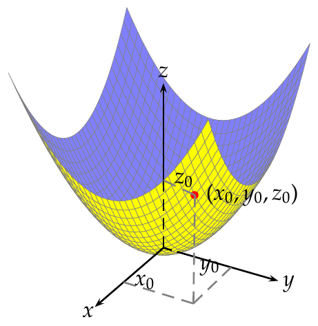
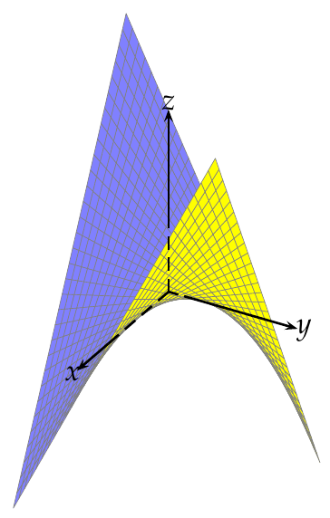
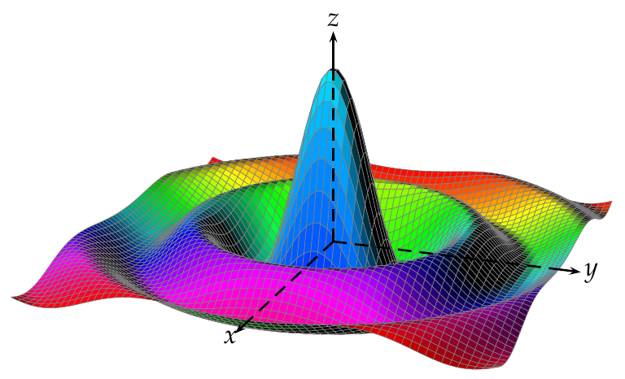
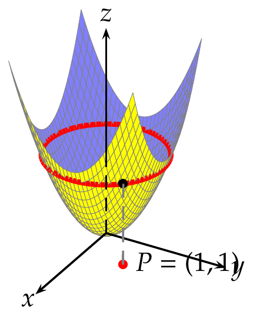
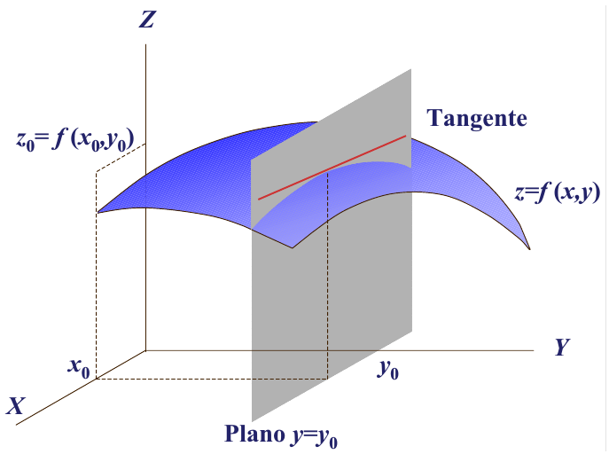
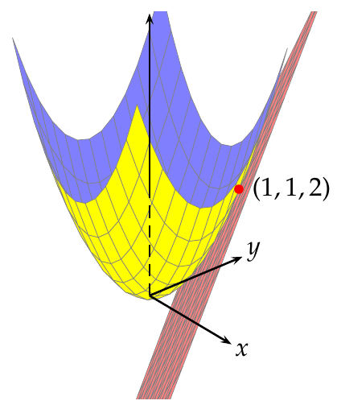
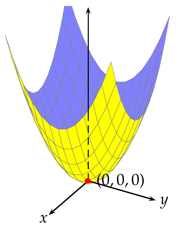
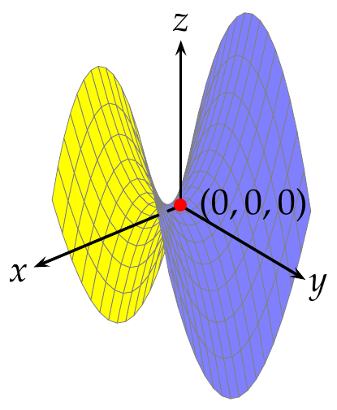
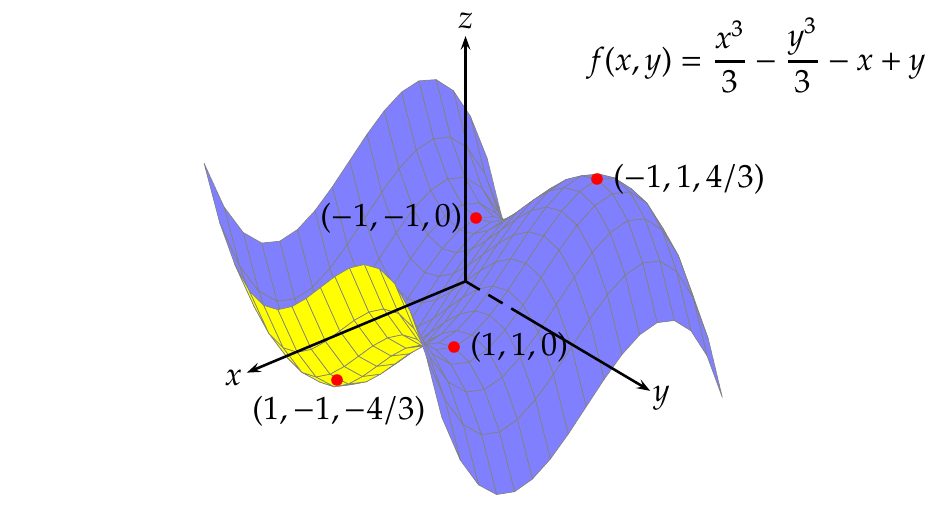

Cálculo diferencial en varias variables Funciones de varias variables En numerosos problemas de geometría, física y ciencias naturales nos encontramos a menudo con variables o factores que dependen o están relacionados con otros dos, tres o más factores: El área de un triángulo depende de dos factores que son su base y su altura. El volumen que ocupa un gas perfecto depende de dos factores que son su presión y su temperatura. El camino recorrido por un cuerpo en un movimiento de caída libre depende de multitud de factores entre los que cabe destacar: el tiempo que dure la caída, el área de la sección transversal del cuerpo, la latitud del lugar, la altura sobre el nivel del mar, la presión del aire, la temperatura del aire, etc. Estas dependencias se expresan con funciones de varias variables. Definición - Función de varias variables. Una función de $n$ variables de un conjunto $A_1\times \cdots \times A_n$ en un conjunto $B$, es una relación que asocia a cada tupla $(a_1,\ldots,a_n)\in A_1\times \cdots\times A_n$ un único elemento de $B$ que se denota $f(a_1,\ldots,a_n)$, y se llama imagen de $(a_1,\ldots,a_n)$ mediante $f$. $$ \begin{array}{lccc} f: & A_1\times\cdots\times A_n & \longrightarrow & B\newline &(a_1,\ldots,a_n) & \longrightarrow & f(a_1,\ldots,a_n) \end{array} $$ Cuando $A_1,\ldots,A_n,B\subseteq \mathbb{R}$, entonces se dice que $f$ es una función real de $n$ variables reales o bien un campo escalar. Ejemplos. El área de un triángulo es la función real de dos variables reales $$f(x,y)=\frac{xy}{2}.$$ El volumen de un gas perfecto es otra función real de dos variables $$v=f(t,p)=\frac{nRt}{p},$$ con $n$ y $R$ constantes. Gráfica de una función de dos variables La representación gráfica cartesiana de una función de dos variables $f(x,y)$ es una superficie del espacio real $\mathbb{R}^3$ donde cada punto de la superficie tiene coordenadas $(x,y,z)$, siendo $z=f(x,y)$.  Ejemplos. La función $f(x,y)=\dfrac{xy}{2}$ que mide el área de un triángulo de base $x$ y altura $y$ tiene la siguiente representación gráfica:  Y la función $\displaystyle f(x,y)=\frac{\operatorname{sen}(x^2+y^2)}{\sqrt{x^2+y^2}}$ tiene la siguiente representación gráfica tan peculiar:  Conjunto de nivel de un campo escalar Definición - Conjunto de nivel. Dado un campo ecalar $f:\mathbb{R}^n\rightarrow \mathbb{R}$, se llama conjunto de nivel $c$ de $f$ al conjunto $$C_{f,c}={(x_1,\ldots,x_n): f(x_1,\ldots,x_n)=c}.$$ Ejemplo. Si $f(x,y)=x^2+y^2$ y $P=(1,1)$, el conjunto de nivel de $f$ que incluye al punto $P$ es $$C_{f,2} = {(x,y): f(x,y)=f(1,1)=2} = {(x,y): x^2+y^2=2},$$ que es la circunferencia del plano real centrada en el origen y de radio $\sqrt{2}$.  Funciones parciales Definición - Función parcial. Dado un campo ecalar $f:\mathbb{R}^n\rightarrow \mathbb{R}$, se llama función parcial $i$-esima de $f$ a cualquier función $f_i:\mathbb{R}\rightarrow \mathbb{R}$ que resulta de fijar todas las variables de $f$ como constantes, excepto la variable $i$, es decir: $$f_i(x)=f(c_1,\ldots,c_{i-1},x,c_{i+1},\ldots,c_{n}),$$ con $c_j$ $(j=1,\ldots, n,\ j\neq i)$ constantes. Ejemplo. Si consideramos la función del área de un triángulo $$f(x,y)=\frac{xy}{2},$$ y fijamos el valor de la base $x=c$, entonces el área del triángulo ya sólo depende de la altura y $f$ se convierte en una función de una sola variable, que es la función parcial: $$f_1(y)=f(c,y)=\frac{cy}{2},$$ con $c$ constante. Noción de derivada parcial Variación de una función con respecto a una variable Al igual que medíamos la variación de una función de una variable, tiene sentido medir la variación de una función de varias variables con respecto a cada una de sus variables. Sea $z=f(x,y)$ un campo escalar de $\mathbb{R}^2$. Si estamos en el punto $(x_0,y_0)$ y nos movemos una cantidad $\Delta x$ en la dirección del eje $X$, entonces, al mantenerse la coordenada $y$ constante, pasaremos desde el punto $(x_0,y_0)$ al punto $(x_0+\Delta x,y_0)$, y la variación que experimenta la función será $$\Delta z=f(x_0+\Delta x,y_0)-f (x_0,y_0).$$ La variación relativa que experimenta la función con respecto a la variable $x$ vendrá dada por el cociente $$\frac{\Delta z}{\Delta x}=\frac{f(x_0+\Delta x,y_0)-f(x_0,y_0)}{\Delta x}.$$ Tasa de variación instantánea de un campo escalar con respecto a una variable Si en lugar de medir la variación de una función con respecto a una variable en un intervalo, medimos la variación en un punto, es decir, cuando $\Delta x$ tiende a 0, entonces obtenemos una tasa de variación instantánea: $$\lim_{\Delta x\rightarrow 0}\frac{\Delta z}{\Delta x}=\lim_{\Delta x \rightarrow 0}\frac{f(x_0+\Delta x,y_0)-f(x_0,y_0)}{\Delta x}.$$ Al valor del límite, cuando existe, también se le conoce como derivada parcial de $f$ con respecto a la variable $x$ en el punto $(x_0,y_0)$ y se nota $$\frac{\partial f}{\partial x}(x_0,y_0).$$ Esta derivada parcial mide la tasa de variación instantánea de $f$ en el punto $P=(x_0,y_0)$ cuando $P$ se mueve en la dirección del eje $X$. Interpretación geométrica de la derivada parcial Geométricamente, $z=f(x,y)$ define una superficie. Si se corta esta superficie con el plano de ecuación $y=y_0$ (es decir, si $y$ se fija como una constante), la intersección de este plano con la superficie es una curva plana cuya pendiente en el punto $(x_0,y_0)$ es la derivada parcial de $f$ con respecto a $x$ en el punto $(x_0,y_0)$.  Derivada parcial El concepto de derivada parcial visto para funciones de dos variables puede extenderse fácilmente para funciones de $n$ variables. Definición - Derivada parcial. Dada una función de $n$ variables $f(x_1,\ldots,x_n)$, se dice que $f$ es derivable parcialmente con respecto a la variable $x_i$ en el punto $a=(a_1,\ldots,a_n)$ si existe el límite $$\lim_{h\rightarrow 0} \frac{f(a_1,\ldots,a_{i-1},a_i+h,a_{i+1},\ldots,a_n)-f(a_1,\ldots,a_{i-1},a_i,a_{i+1},\ldots,a_n)} {h}.$$ En tal caso, al valor del límite se le llama derivada parcial de $f$ en $a$ con respecto a la variable $x_i$, y se denota $$f’_{x_i}(a)=\frac{\partial f}{\partial x_i}(a).$$ La definición de derivada para funciones de una variable es un caso particular de esta definición para $n=1$. Cálculo de la derivada parcial Al medir la variación de $f$ con respecto a la variación de una sola de sus variables $x_i$ en un punto $a=(a_1,\ldots,a_n)$, el resto de las variables se pueden considerar como constantes y, en tal caso, podemos ver a $f$ como una función parcial $i$-ésima $$f_i(x_i)=f(a_1,\ldots,a_{i-1},x_i,a_{i+1},\ldots,a_n).$$ La derivada parcial de $f$ con respecto a $x_i$ puede calcularse derivando esta función: $$\frac{\partial f}{\partial x_i}(a)=f_i’(a_i).$$ Regla. Para derivar parcialmente $f(x_1,\ldots,x_n)$ con respecto a una variable $x_i$, se deriva $f$ como si la única variable fuese $x_i$, tratando el resto de las variables como constantes. Ejemplo En la ecuación de estado de los gases perfectos, el volumen es una función que depende de dos variables $$v(t,p)=\frac{nRt}{p},$$ donde $t$ mide la temperatura, $p$ la presión y $n$ y $R$ son constantes. La tasa de variación instantánea que experimenta el volumen con respecto a la presión viene dada por la derivada parcial de $v$ con respecto a $p$. Para calcular esta derivada parcial se fija $t$ como constante y se deriva $v$ como si la única variable fuese $p$: $$\frac{\partial v}{\partial p}(t,p)=\frac{d}{dp}\left(\frac{nRt}{p}\right)_{\mbox{$t=$cte}}=\frac{-nRt}{p^2}.$$ Del mismo modo, la tasa de variación instantánea del volumen conrespecto a la temperatura es: $$\frac{\partial v}{\partial t}(t,p)=\frac{d}{dt}\left(\frac{nRt}{p}\right)_{\mbox{$p=$cte}}=\frac{nR}{p}.$$ Vector gradiente Definición - Vector gradiente. Dado un campo escalar $f(x_1,\ldots,x_n)$, se llama gradiente de $f$, y se escribe $\nabla f$, a la función que a cada punto $a=(a_1,\ldots,a_n)$ le asigna el vector cuyas coordenadas cartesianas son las derivadas parciales de $f$ en $a$, $$\nabla f(a)=\left(\frac{\partial f}{\partial x_1}(a),\ldots,\frac{\partial f}{\partial x_n}(a)\right).$$ Más adelante se mostrará que vector gradiente en un punto dado tiene la misma magnitud y dirección que la velocidad máxima de variación de la función en ese punto. De este modo, , mientras que $-\nabla f(a)$ indica la dirección de máximo decrecimiento. Ejemplo. Al calentar una superficie la temperatura $t$ (en ºC) en cada punto $(x,y,z)$ (en m) de dicha superficie viene dada por la función: $$t(x,y,z)=\frac{x}{y}+z^2.$$ La dirección en la que más rápidamente aumenta la temperatura nos la da el vector gradiente $$\nabla t(x,y,z)=\left(\frac{\partial t}{\partial x}(x,y,z),\frac{\partial t}{\partial y}(x,y,z),\frac{\partial t}{\partial z}(x,y,z)\right)=\left(\frac{1}{y},\frac{-x}{y^2},2z\right).$$ Si estamos, por ejemplo, en el punto $(2,1,1)$ dicha dirección será $$\nabla t(2,1,1)=\left(\frac{1}{1},\frac{-2}{1^2},2\cdot 1\right)=(1,-2,2),$$ y su magnitud $$|\nabla f(2,1,1)|=|\sqrt{1^2+(-2)^2+2^2}|=|\sqrt{9}|=3 \mbox{ $^\circ$C/m}.$$ Composición de una trayectoria con un campo escalar Regla de la cadena Si $f:\mathbb{R}^n\rightarrow \mathbb{R}$ es un campo escalar y $g:\mathbb{R}\rightarrow \mathbb{R}^n$ es una trayectoría, entonces es posible componer $g$ con $f$, de manera que $f\circ g:\mathbb{R}\rightarrow \mathbb{R}$ es una función real de variable real. Teorema - Regla de la cadena. Si $f:\mathbb{R}^n\rightarrow \mathbb{R}$ es un campo escalar y $g:\mathbb{R}\rightarrow \mathbb{R}^n$ es una trayectoría, entonces $$(f\circ g)'(t) = \nabla f(g(t))\cdot g’(t).$$ Ejemplo. Si se toma el campo escalar del plano real $f(x,y)=x^2y$ y la trayectoria $g(t)=(\cos t,\operatorname{sen} t)$ $t\in [0,2\pi]$ del mismo plano, entonces $$\nabla f(x,y) = (2xy, x^2) \quad \mbox{y} \quad g’(t) = (-\operatorname{sen} t, \cos t),$$ y $$(f\circ g)'(t) = \nabla f(g(t))\cdot g’(t) = (2\cos t\operatorname{sen} t,\cos^2 t)\cdot (-\operatorname{sen} t,\cos t) = -2\cos t\operatorname{sen}^2 t+\cos^3 t.$$ Se puede llegar al mismo resultado, sin aplicar la regla de la cadena, derivando directamente la función compuesta $$(f\circ g)(t) = f(g(t)) = f(\cos t, \operatorname{sen} t) = \cos^2 t\operatorname{sen} t,$$ de manera que $$(f\circ g)'(t) = 2\cos t(-\operatorname{sen} t)\operatorname{sen} t+\cos^2 t \cos t = -2\cos t\operatorname{sen}^2 t+\cos^3 t.$$ La regla de la cadena para la composición de un campo escalar con una trayectoria permite obtener fácilmente el álgebra de derivadas para funciones reales de una variable real: $$ \begin{aligned} (u+v)’ &= u'+v’\newline (uv)’ &= u’v+uv’\newline \left(\frac{u}{v}\right)’ &= \frac{u’v-uv’}{v^2}\newline (u\circ v)’ &= u’(v)v’ \end{aligned} $$ Para deducir la derivada de la suma se toma el campo escalar $f(x,y)=x+y$ y la trayectoria $g(t)=(u(t),v(t))$, de manera que aplicando la regla de la cadena se tiene $$(u+v)'(t) = (f\circ g)'(t) = \nabla f(g(t))\cdot g’(t) = (1,1)\cdot (u’(t),v’(t)) = u’(t)+v’(t).$$ y para deducir derivada del producto, tomando $f(x,y)=xy$, se tiene $$(uv)'(t) = (f\circ g)'(t) = \nabla f(g(t))\cdot g’(t) = (v(t),u(t))\cdot (u’(t),v’(t)) = u’(t)v(t)+u(t)v’(t).$$ Derivada direccional Para un campo escalar $f(x,y)$ de $\mathbb{R}^2$ y un punto $P=(x_0,y_0)$, se vió que $\dfrac{\partial f}{\partial x}$ es la tasa de variación instantánea de $f$ con respecto a $x$ en el punto $P$, es decir, cuando nos desplazamos desde el punto $P$ en la dirección del eje $X$. Del mismo modo, $\dfrac{\partial f}{\partial y}$ es la tasa de variación instantánea de $f$ con respecto a $y$ en el punto $P$, es decir, cuando nos desplazamos desde el punto $P$ en la dirección del eje $Y$. Pero, ¿qué pasa si nos movemos en cualquier otra dirección? La tasa de variación instantánea de $f$ en un punto $P$ en la dirección de un vector unitario cualquiera $u$ se conoce como derivada direccional. Definición - Derivada direccional. Dado un campo escalar $f$ de $\mathbb{R}^n$, un punto $P$ y un vector unitario $\mathbf{u}$ en ese espacio, el límite $$f’{\mathbf{u}}(P) = \lim{h\rightarrow 0}\frac{f(P+h\mathbf{u})-f(P)}{h},$$ cuando existe, se llama derivada direccional de $f$ en el punto $P$ en la dirección de $\mathbf{u}$. Si se considera un vector unitario $\mathbf{u}$, la trayectoria que pasa por $P$, dirigida por $\mathbf{u}$, tiene ecuación $$g(t)=P+t\mathbf{u},\ t\in\mathbb{R},$$ que para $t=0$, pasa por $P=g(0)$ con velocidad $\mathbf{u}=g’(0)$. Así, la tasa de variación de $f$ a partir del punto $P$ en la dirección de $\mathbf{u}$ es $$(f\circ g)'(0) = \nabla f(g(0))\cdot g’(0) = \nabla f(P)\cdot \mathbf{u}.$$ Obsérvese que las derivadas parciales son las derivadas direccionales en las direcciones de los vectores coordenados. Ejemplo. Dada la función $f(x,y) = x^2+y^2$, su vector gradiente es $$\nabla f(x,y) = (2x,2y),$$ de manera que la derivada direccional en el punto $P=(1,1)$, en la dirección del vector unitario $\mathbf{u}=(1/\sqrt{2},1/\sqrt{2})$ es $$f’_{\mathbf{u}}(P) = \nabla f(P)\cdot \mathbf{u} = (2,2)\cdot(1/\sqrt{2},1/\sqrt{2}) = \frac{2}{\sqrt{2}}+\frac{2}{\sqrt{2}} = \frac{4}{\sqrt{2}}.$$ Para calcular la derivada direccional en la dirección de un vector no unitario $\mathbf{v}$, basta con convertirlo en unitario mediante la transformación $$\mathbf{v’}=\frac{\mathbf{v}}{|\mathbf{v}|}.$$ Crecimiento de un campo escalar a partir del gradiente Como se ha visto, para un vector unitario $\mathbf{u}$ $$f’_{\mathbf{u}}(P) = \nabla f(P)\cdot \mathbf{u} = |\nabla f(P)|\cos \theta,$$ donde $\theta$ es el ángulo que forma $\mathbf{u}$ con el vector gradiente $\nabla f(P)$. Teniendo en cuenta que $-1\leq \cos\theta\leq 1$, para cualquier vector $\mathbf{u}$ se cumple $$-|\nabla f(P)|\leq f’_{\mathbf{u}}(P)\leq |\nabla f(P)|.$$ Además, si $\mathbf{u}$ tiene la misma dirección y sentido que el gradiente, se tiene $$f’_{\mathbf{u}}(P)=\lvert \nabla f(P)\rvert \cos 0=\lvert \nabla f(P)\rvert .$$ Por tanto, el crecimiento máximo de un campo escalar se produce en la dirección y sentido del gradiente. Del mismo modo, si $\mathbf{u}$ tiene la misma dirección y sentido opuesto al gradiente, se tiene $$f’_{\mathbf{u}}(P)=\lvert \nabla f(P)\rvert \cos \pi=-\lvert \nabla f(P)\rvert.$$ Por tanto, el decrecimiento máximo de un campo escalar se produce en la dirección y sentido opuesto al gradiente. Derivación implícita Si se sabe que la ecuación $$f(x,y)=0$$ define a $y$ como función de $x$, $y=h(x)$, alrededor de cierto valor $x=x_0$ para el que $y=h(x_0)=y_0$, entonces, si se toma la trayectoria $g(x)=(x,h(x))$, la ecuación anterior se puede expresar como $$(f\circ g)(x) = f(g(x)) = f(x,h(x))=0,$$ de modo que usando la regla de la cadena sobre se tiene $$(f\circ g)'(x) = \nabla f(g(x))\cdot g’(x) = \left(\frac{\partial f}{\partial x}, \frac{\partial f}{\partial y}\right)\cdot (1,h’(x)) = \frac{\partial f}{\partial x}+\frac{\partial f}{\partial y}h’(x) = 0,$$ de donde se deduce $$y'=h’(x)=\frac{-\dfrac{\partial f}{\partial x}}{\dfrac{\partial f}{\partial y}}$$ A este proceso que permite obtener $y'$ en un entorno de $x_0$ sin disponer de la fórmula explícita $y=h(x)$, se le llama derivación implícita. Ejemplo. La ecuación $x^2+y^2=1$ define a la circunferencia de radio 1 centrada en el origen de coordenadas, que también puede expresarse como $$f(x,y) = x^2+y^2-1 = 0.$$ Si se piensa en $y$ como función implícita de $x$, se tiene $$y'=\frac{-\dfrac{\partial f}{\partial x}}{\dfrac{\partial f}{\partial y}} = \frac{-2x}{2y}=\frac{-x}{y}.$$ Podría llegarse al mismo resultado, despejando $y$ de la ecuación de la circunferencia, $$x^2+y^2=1 \Leftrightarrow y^2=1-x^2 \Leftrightarrow y= \pm\sqrt{1-x^2}.$$ Si se toma la raíz positiva, que corresponde a la semicircunferencia superior, la derivada vale $$y’ = \frac{1}{2\sqrt{1-x^2}}(-2x) = \frac{-x}{\sqrt{1-x^2}},$$ que coincide con el resultado de la derivación implícita, teniendo en cuenta que $y=\sqrt{1-x^2}$. Propiedad del gradiente Teorema. Sea $C$ el conjunto de nivel de un campo escalar $f$ que incluye a un punto $P$. Si $\mathbf{v}$ es la velocidad al pasar por $P$ de una trayectoria que circule por $C$, entonces $$\nabla f(P) \cdot \mathbf{v} = 0.$$ Es decir, el vector gradiente de $f$ en $P$ es normal a $C$ en $P$, siempre que no sea nulo. Demostración. Si se considera una trayectoria $g(t)$ a lo largo del conjunto de nivel $C$ que pase por $P=g(t_0)$, de modo que $\mathbf{v}=g’(t_0)$, entonces $$(f\circ g)(t) = f(g(t)) = f(P),$$ que es constante para cualquier $t$, y al aplicar la regla de la cadena se tiene $$(f\circ g)'(t) = \nabla f(g(t))\cdot g’(t) = 0,$$ de modo que, cuanto $t=t_0$, se tiene $$\nabla f(P)\cdot \mathbf{v} = 0.$$ Rectas normal y tangente a una linea en el plano Según el resultado anterior, la recta normal a una línea $f(x,y)=0$ en un punto $P=(x_0,y_0)$, tiene ecuación $$P+t\nabla f(P) = (x_0,y_0)+t\nabla f(x_0,y_0).$$ Ejemplo. Dado el campo escalar $f(x,y)=x^2+y^2-1$, y el punto $P=(0,1)$, resulta que el conjunto de nivel que pasa por $P$, para el que $f(x,y)=f(P)=0$ es la circunferencia de radio 1 centrada en el origen. Así pues, tomando como vector normal el gradiente de $f$ $$\nabla f(x,y) = (2x,2y),$$ que en el punto $P=(0,1)$ vale $\nabla f(0,1) = (0,2)$, la recta normal a la circunferencia en $P$ es $$P+t\nabla f(P) = (0,1)+t(0,2) = (0,1+2t),$$ que se trata de la recta vertical $x=0$, que coincide con el eje $Y$. y la recta tangente a la circunferencia en $P$ es $$((x,y)-P)\cdot \nabla f(P) = ((x,y)-(0,1))\cdot (0,2) = (x,y-1)\cdot(0,2) = 2(y-1) = 0 \Rightarrow y=1.$$ Recta normal y plano tangente a una superficie De mismo modo, si en lugar de una línea en el plano se tiene una superficie $f(x,y,z)=0$, en el punto $P=(x_0,y_0,z_0)$ la recta normal tiene ecuación $$P+t\nabla f(P) = (x_0,y_0,z_0)+t\nabla f(x_0,y_0,z_0).$$ Dada el campo escalar $f(x,y,z)=x^2+y^2-z$, y el punto $P=(1,1,2)$, resulta que el conjunto de nivel que pasa por $P$, para el que $f(x,y)=f(P)=0$, es el paraboloide $z=x^2+y^2$. Así pues, tomando como vector normal el gradiente de $f$, que vale $$\nabla f(x,y,z) = (2x,2y,-1),$$ que en el punto $P=(1,1,2)$ vale $\nabla f(1,1,2) = (2,2,-1)$, la recta normal al paraboloide en $P$ es $$P+t\nabla f(P) = (1,1,2)+t\nabla f(1,1,2) = (1,1,2)+t(2,2,-1) = (1+2t,1+2t,2-t),$$ que se trata de la recta de ecuaciones $x=y$ y $x=5-2z$. Y el plano tangente al paraboloide en $P$ es $$ \begin{aligned} ((x,y,z)-P)\cdot \nabla f(P) &= ((x,y,z)-(1,1,2))(2,2,-1) = (x-1,y-1,z-2)(2,2,-1)=\newline &= 2(x-1)+2(y-1)-(z-2) = 2x+2y-z-2= 0. \end{aligned} $$ Ejemplo. La gráfica del paraboloide $f(x,y,z)=x^2+y^2-z=0$ y su plano tangente en el punto $P=(1,1,2)$ es  Derivadas parciales de segundo orden Las derivadas parciales de una función son, a su vez, funciones de varias variables que muchas veces pueden volverse a derivar parcialmente con respecto a alguna de sus variables. Definición - Derivadas parciales de segundo orden. Si una función $f(x_1,\ldots,x_n)$ tiene derivada parcial $$f’{x_i}(x_1,\ldots,x_n)$$ con respecto a la variable $x_i$ en un conjunto $A$, entonces podemos derivar de nuevo parcialmente $f’{x_i}$ con respecto a la variable $x_j$. Esta segunda derivada, cuando existe, se llama derivada parcial de segundo orden de $f$ con respecto a las variables $x_i$ y $x_j$, y se nota $$\frac{\partial ^2 f}{\partial x_j \partial x_i}= \frac{\partial}{\partial x_j}\left(\frac{\partial f}{\partial x_i}\right).$$ De forma análoga se definen las derivadas de orden superior. Ejemplo. La función de dos variables $$f(x,y)=x^y$$ tiene cuatro derivadas parciales de segundo orden, que son: $$\begin{aligned} \frac{\partial^2 f}{\partial x^2}(x,y) &= \frac{\partial}{\partial x}\left(\frac{\partial f}{\partial x}(x,y)\right) = \frac{\partial}{\partial x}\left(yx^{y-1}\right) = y(y-1)x^{y-2},\newline \frac{\partial^2 f}{\partial y \partial x}(x,y) &= \frac{\partial}{\partial y}\left(\frac{\partial f}{\partial x}(x,y)\right) = \frac{\partial}{\partial y}\left(yx^{y-1}\right) = x^{y-1}+yx^{y-1}\log x,\newline \frac{\partial^2 f}{\partial x \partial y}(x,y) &= \frac{\partial}{\partial x}\left(\frac{\partial f}{\partial y}(x,y)\right) = \frac{\partial}{\partial x}\left(x^y\log x \right) = yx^{y-1}\log x+x^y\frac{1}{x},\newline \frac{\partial^2 f}{\partial y^2}(x,y) &= \frac{\partial}{\partial y}\left(\frac{\partial f}{\partial y}(x,y)\right) = \frac{\partial}{\partial y}\left(x^y\log x \right) = x^y(\log x)^2.\end{aligned}$$ Matriz hessiana Definición - Matriz hessiana. Dada una función de varias variables $f(x_1,\ldots,x_n)$, para la que existen todas sus derivadas parciales de segundo orden en un punto $a=(a_1,\ldots,a_n)$, se define la matriz hessiana de $f$ en $a$, y se nota $\nabla^2f(a)$, como la matriz cuadrada cuyos elementos son $$\nabla^2f(a)=\left( \begin{array}{cccc} \dfrac{\partial^2 f}{\partial x_1^2}(a) & \dfrac{\partial^2 f}{\partial x_1 \partial x_2}(a) & \cdots & \dfrac{\partial^2 f}{\partial x_1 \partial x_n}(a)\newline \dfrac{\partial^2 f}{\partial x_2 \partial x_1}(a) & \dfrac{\partial^2 f}{\partial x_2^2}(a) & \cdots & \dfrac{\partial^2 f}{\partial x_2 \partial x_n}(a)\newline \vdots & \vdots & \ddots & \vdots \newline \dfrac{\partial^2 f}{\partial x_n \partial x_1}(a) & \dfrac{\partial^2 f}{\partial x_n \partial x_2}(a) & \cdots & \dfrac{\partial^2 f}{\partial x_n^2}(a) \end{array} \right).$$ Al determinante de esta matriz se le llama hessiano de $f$ en $a$, y se nota $Hf(a)=\lvert \nabla^2f(a)\rvert$. Ejemplo. Consideremos de nuevo la función de dos variables $f(x,y)=x^y$. Su matriz hessiana es $$\nabla^2f(x,y)=\left( \begin{array}{cc} \dfrac{\partial^2 f}{\partial x^2} & \dfrac{\partial^2 f}{\partial x \partial y}\newline \dfrac{\partial^2 f}{\partial y \partial x} & \dfrac{\partial^2 f}{\partial y^2} \end{array} \right) \left( \begin{array}{cc} y(y-1)x^{y-2} & x^{y-1}(y\log x+1) \newline x^{y-1}(y\log x+1) & x^y(\log x)^2 \end{array} \right).$$ En el punto $(1,2)$ la matriz vale $$\nabla^2f(1,2)=\left( \begin{array}{cc} 2(2-1)1^{2-2} & 1^{2-1}(2\log 1+1) \newline 1^{2-1}(2\log 1+1) & 1^2(\log 1)^2 \end{array} \right) \left( \begin{array}{cc} 2 & 1 \newline 1 & 0 \end{array} \right).$$ Y el hessiano en dicho punto vale $$Hf(1,2)=\left| \begin{array}{cc} 2 & 1 \newline 1 & 0 \end{array} \right|= 2\cdot 0-1\cdot1= -1. $$ Igualdad de las derivadas cruzadas En el ejemplo anterior se aprecia que las derivadas cruzadas de segundo orden $\frac{\partial^2 f}{\partial y\partial x}$ y $\frac{\partial^2 f}{\partial x\partial y}$ coinciden. Ello es debido al siguiente teorema: Teorema - Igualdad derivadas cruzadas. Si $f(x,y)$ es una función tal que sus derivadas parciales $\frac{\partial f}{\partial x}$, $\frac{\partial f}{\partial y}$, $\frac{\partial^2 f}{\partial y\partial x}$ y $\frac{\partial^2 f}{\partial x\partial y}$ existen y son continuas en un conjunto abierto $A$, entonces $$\frac{\partial^2 f}{\partial y\partial x}=\frac{\partial^2 f}{\partial x\partial y}.$$ Una consecuencia del teorema es que, al calcular una derivada parcial de segundo orden que cumpla lo anterior, ¡el orden en que se realicen las derivadas parciales no importa! Si el teorema se cumple para todas las derivadas parciales de segundo orden, entonces la matriz hessiana es simétrica. Fórmula de Taylor Aproximación lineal de un campo escalar Ya se vio cómo aproximar funciones de una variable mediante polinomios de Taylor. Esto también se puede generalizar a la aproximación de campos escalares mediante polinomios de varias variables. Si $P$ es un punto del dominio de un campo escalar $f$ y $\mathbf{v}$ un vector, la fórmula de Taylor de primer grado de $f$ alrededor del punto $P$ es $$f(P+\mathbf{v}) = f(P) + \nabla f(P)\cdot \mathbf{v} +R^1_{f,P}(\mathbf{v}),$$ donde $$ \begin{aligned} P^1_{f,P}(\mathbf{v}) = f(P)+\nabla f(P)\mathbf{v} \end{aligned} $$ es el polinomio de Taylor de primer grado de $f$ en el punto $P$, y $R^1_{f,P}(\mathbf{v})$ es el *resto de taylor* para el vector $\mathbf{v}$, y mide el error cometido en la aproximación. Se cumple que $$\lim_{|\mathbf{v}|\rightarrow 0} \frac{R^1_{f,P}(\mathbf{v})}{|\mathbf{v}|} = 0$$ Obsérvese que el polinomio de Taylor de primer grado coincide con el plano tangente a $f$ en $P$. Si $f$ es un campo escalar de dos variables $f(x,y)$ y $P=(x_0,y_0)$, teniendo en cuenta que para un punto cualquiera $Q=(x,y)$, el vector $\mathbf{v}=\vec{PQ}=(x-x_0,y-y_0)$, el polinomio de Taylor de $f$ en el punto $P$, puede expresarse $$\begin{aligned} P^1_{f,P}(x,y) &= f(x_0,y_0)+\nabla f(x_0,y_0)(x-x_0,y-y_0) =\newline &= f(x_0,y_0)+\frac{\partial f}{\partial x}(x_0,y_0)(x-x_0)+\frac{\partial f}{\partial y}(x_0,y_0)(y-y_0). \end{aligned} $$ Ejemplo. Dado el campo escalar $f(x,y)=\log(xy)$, su gradiente es $$\nabla f(x,y) = \left(\frac{1}{x},\frac{1}{y}\right),$$ y el polinomio de Taylor de primer grado en el punto $P=(1,1)$ es $$ \begin{aligned} P^1_{f,P}(x,y) &= f(1,1) +\nabla f(1,1)\cdot (x-1,y-1) = \newline &= \log 1+(1,1)\cdot(x-1,y-1) = x-1+y-1 = x+y-2.\newline \end{aligned} $$ Este polinomio, permite aproximar el valor de $f$ cerca del punto $P$. Por ejemplo $$f(1.01,1.01) \approx P^1_{f,P}(1.01,1.01) = 1.01+1.01-2 = 0.02.$$ Aproximación cuadrática de un campo escalar Si $P$ es un punto del dominio de un campo escalar $f$ y $\mathbf{v}$ un vector, la fórmula de Taylor de segundo grado de $f$ alrededor del punto $P$ es $$f(P+\mathbf{v}) = f(P) + \nabla f(P)\cdot \mathbf{v} + \frac{1}{2}\nabla^2f(P)\mathbf{v}\cdot\mathbf{v} + R^2_{f,P}(\mathbf{v}),$$ donde $$ \begin{aligned} P^2_{f,P}(\mathbf{v})&=f(P)+\nabla f(P)\mathbf{v}+\frac{1}{2}\nabla^2f(P)\mathbf{v}\cdot\mathbf{v} \end{aligned} $$ es el polinomio de Taylor de segundo grado de $f$ en el punto $P$, y $R^2_{f,P}(\mathbf{v})$ es el *resto de taylor* para el vector $\mathbf{v}$. Se cumple que $$\lim_{|\mathbf{v}\rightarrow 0|} \frac{R^2_{f,P}(\mathbf{v})}{|\mathbf{v}|^2} = 0$$ lo que indica que el resto es mucho más pequeño que el cuadrado del módulo de $\mathbf{v}$. Si $f$ es un campo escalar de dos variables $f(x,y)$ y $P=(x_0,y_0)$, el polinomio de Taylor de $f$ en el punto $P$, puede expresarse $$ \begin{gathered} P^2_{f,P}(x,y) = f(x_0,y_0)+\nabla f(x_0,y_0)(x-x_0,y-y_0) +\newline +\frac{1}{2}(x-x_0,y-y_0)\nabla^2f(x_0,y_0)(x-x_0,y-y_0)= \newline = f(x_0,y_0)+\frac{\partial f}{\partial x}(x_0,y_0)(x-x_0)+\frac{\partial f}{\partial y}(x_0,y_0)(y-y_0)+\newline +\frac{1}{2}\left(\frac{\partial^2 f}{\partial x^2}(x_0,y_0) (x-x_0)^2 + 2\frac{\partial^2 f}{\partial y\partial x}(x_0,y_0) (x-x_0)(y-y_0) + \frac{\partial^2 f}{\partial y^2}(x_0,y_0) (y-y_0)^2\right) \end{gathered} $$ Ejemplo. Dado el campo escalar $f(x,y)=\log(xy)$, su gradiente es $$\nabla f(x,y) = \left(\frac{1}{x},\frac{1}{y}\right),$$ y su matriz hessiana es $$Hf(x,y) = \left( \begin{array}{cc} \frac{-1}{x^2} & 0\newline 0 & \frac{-1}{y^2} \end{array} \right)$$ y el polinomio de Taylor de segundo grado en el punto $P=(1,1)$ es $$ \begin{aligned} P^2_{f,P}(x,y) &= f(1,1) +\nabla f(1,1)\cdot (x-1,y-1) + \frac{1}{2}(x-1,y-1)\nabla^2f(1,1)\cdot(x-1,y-1)=\newline &= \log 1+(1,1)\cdot(x-1,y-1) + \frac{1}{2}(x-1,y-1) \left( \begin{array}{cc} -1 & 0\newline 0 & -1 \end{array} \right) \left( \begin{array}{c} x-1\newline y-1 \end{array} \right) = \newline &= x-1+y-1+\frac{-x^2-y^2+2x+2y-2}{2} = \frac{-x^2-y^2+4x+4y-6}{2}. \end{aligned} $$ Así, $$f(1.01,1.01) \approx P^1_{f,P}(1.01,1.01) = \frac{-1.01^2-1.01^2+4\cdot 1.01+4\cdot 1.01-6}{2} = 0.0199$$. Extremos Definición - Máximo y mínimo relativos. Dado un campo escalar $f$ de $\mathbb{R}^n$, se dice que un punto $P$ es un máximo relativo de $f$ si existe un valor $\epsilon>0$ tal que $$f(P)\geq f(X)\ \forall X, |\vec{PX}|<\epsilon.$$ Del mismo modo se dice que un punto $P$ es un mínimo relativo de $f$ si existe un valor $\epsilon>0$ tal que $$f(P)\leq f(X)\ \forall X, |\vec{PX}|<\epsilon.$$ A los máximos y mínimos de $f$ se les conoce como extremos relativos de $f$. Anulación del gradiente en los extremos Si $P$ es un extremo de un campo escalar $f$ de $\mathbb{R}^n$, entonces $P$ es un punto crítico de $f$, es decir, $$\nabla f(P) = 0.$$ Tomando la trayectoria que pasa por $P$ con la dirección y sentido del gradiente, $$g(t)=P+t\nabla f(P),$$ la función $h=(f\circ g)(t)$ nunca decrece ya que $$h’(t)= (f\circ g)'(t) = \nabla f(g(t))\cdot g’(t) = \nabla f(P)\cdot \nabla f(P) = |\nabla f(P)|^2\geq 0.$$ y sólo se anula si $\nabla f(P)=0$. Así pues, si $\nabla f(P)\neq 0$, entonces $P$ no puede ser un máximo ya que siguiendo la trayectoria de $g$ desde $P$ se encontrarían puntos en los que la imagen de $f$ es mayor que en $P$. Del mismo modo, siguiendo la trayectoria opuesta a $g$ se encontrarían puntos en los que la imagen de $f$ es menor que la imagen en $P$, por lo que tampoco puede ser un mínimo. Ejemplo. Para el campo escalar $f(x,y)=x^2+y^2$, resulta evidente que sólo tiene un mínimo en el origen $(0,0)$ ya que $$f(0,0)=0 \leq f(x,y)=x^2+y^2,\ \forall x,y\in \mathbb{R}.$$ En este punto se cumple, $\nabla f(0,0) = 0$.  Puntos de silla No todos los puntos críticos son extremos. Si se considera, por ejemplo, el campo escalar $f(x,y)=x^2-y^2$, su gradiente es $$\nabla f(x,y) = (2x,-2y),$$ que sólo se anula en el punto $(0,0)$. Sin embargo, este punto no es un máximo relativo ya que los puntos $(x,0)$ del eje $X$ tienen imágenes $f(x,0)=x^2\geq 0=f(0,0)$, y tampoco es un mínimo relativo ya que los puntos $(0,y)$ del eje $Y$ tienen imágenes $f(0,y)=-y^2\leq 0=f(0,0)$. Este tipo de puntos que anulan el gradiente pero que no son extremos, se conocen como puntos de silla.  Determinación de los extremos de un campo escalar De la fórmula de Taylor de segundo grado para un campo escalar $f$ en un punto $P$ se deduce que $$f(P+\mathbf{v})-f(P)\approx \nabla f(P)\mathbf{v}+\frac{1}{2}\nabla^2f(P)\mathbf{v}\cdot\mathbf{v}.$$ De manera que si $P$ es un punto crítico de $f$, como $\nabla f(P)=0$, se tiene que $$f(P+\mathbf{v})-f(P)\approx \frac{1}{2}\nabla^2f(P)\mathbf{v}\cdot\mathbf{v}.$$ Por tanto, el signo de $f(P+\mathbf{v})-f(P)$ coincide con el signo del término cuadrático $Hf(P)\mathbf{v}\cdot\mathbf{v}$. Se pueden dar cuatro posibilidades: Definido positivo: $\nabla^2f(P)\mathbf{v}\cdot\mathbf{v}>0$ $\forall \mathbf{v}\neq 0$. Definido negativo: $\nabla^2f(P)\mathbf{v}\cdot\mathbf{v}<0$ $\forall \mathbf{v}\neq 0$. Indefinido: $\nabla^2f(P)\mathbf{v}\cdot\mathbf{v}>0$ para algún $\mathbf{v}\neq 0$ y $\nabla^2f(P)\mathbf{u}\cdot\mathbf{u}<0$ para algún $\mathbf{u}\neq 0$. Semidefinido: Cualquier otro caso distinto de los anteriores. Así pues, dependiendo el signo de $Hf(P)\mathbf{v}\cdot\mathbf{v}$, se tiene Teorema. Dado un punto crítico $P$ de un campo escalar $f$ que tiene matríz hessiana $Hf(P)$, se cumple Si $\nabla^2f(P)$ es definido positivo entonces $f$ tiene un mínimo relativo en $P$. Si $\nabla^2f(P)$ es definido negativo entonces $f$ tiene un máximo relativo en $P$. Si $\nabla^2f(P)$ es indefinido entonces $f$ tiene un punto de silla en $P$. En el caso de que $\nabla^2f(P)$ sea semidefinido, no se puede obtener ninguna conclusión y hay que recurrir a derivadas parciales de orden superior. En el caso particular de un campo escalar de dos variables se tiene Teorema. Dado un punto crítico $P=(x_0,y_0)$ de un campo escalar $f(x,y)$ que tiene matríz hessiana $\nabla^2f(P)$, se cumple Si $Hf(P)>0$ y $\frac{\partial^2 f}{\partial x^2}(x_0,y_0)>0$ entonces $f$ tiene un mínimo relativo en $P$. Si $Hf(P)>0$ y $\frac{\partial^2 f}{\partial x^2}(x_0,y_0)<0$ entonces $f$ tiene un máximo relativo en $P$. Si $Hf(P)<0$ entonces $f$ tiene un punto de silla en $P$. Ejemplo. Dada el campo escalar $f(x,y)=\dfrac{x^3}{3}-\dfrac{y^3}{3}-x+y$, se tiene que su gradiente vale $$\nabla f(x,y)= (x^2-1,-y^2+1),$$ que se anula en los puntos $(1,1)$, $(1,-1)$, $(-1,1)$ y $(-1,-1)$. La matriz hessiana vale $$\nabla^2f(x,y) = \left( \begin{array}{cc} 2x & 0\newline 0 & -2y \end{array} \right)$$ y el hessiano vale $$Hf(x,y) = -4xy.$$ Así pues, se tiene Punto $(1,1)$: $Hf(1,1)=-4<0 \Rightarrow$ Punto de silla. Punto $(1,-1)$: $Hf(1,-1)=4>0$ y $\frac{\partial^2}{\partial x^2}(1,-1)=2>0 \Rightarrow$ Mínimo relativo. Punto $(-1,1)$: $Hf(-1,1)=4>0$ y $\frac{\partial^2}{\partial x^2}(-1,1)=-2<0 \Rightarrow$ Máximo relativo. Punto $(-1,-1)$: $Hf(-1,-1)=-4<0 \Rightarrow$ Punto de silla.  Derivada Parcial Gradiente Recta Tangente Plano Normal Matriz Hessiana Extremos Anterior Ecuaciones diferenciales ordinarias